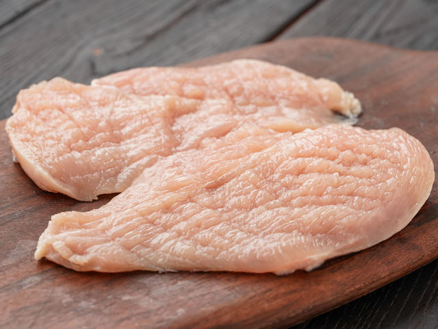
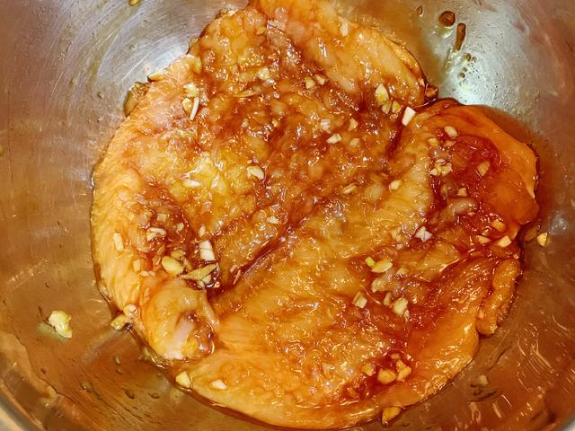
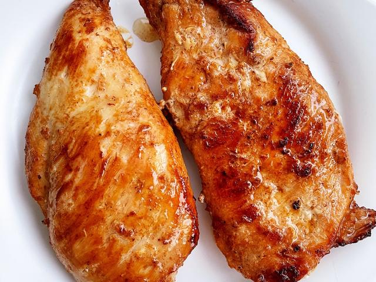
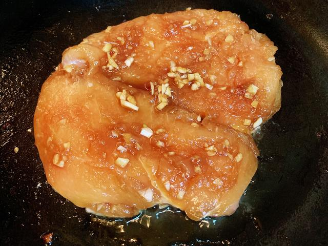
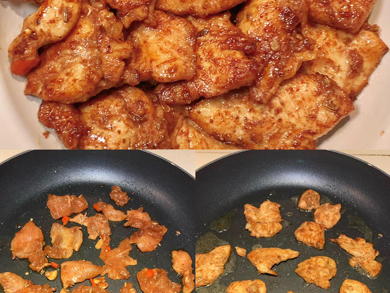
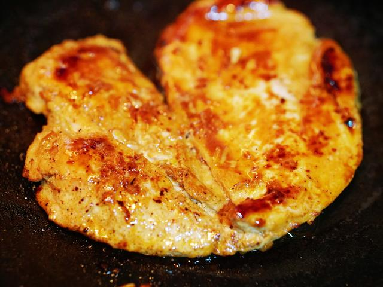
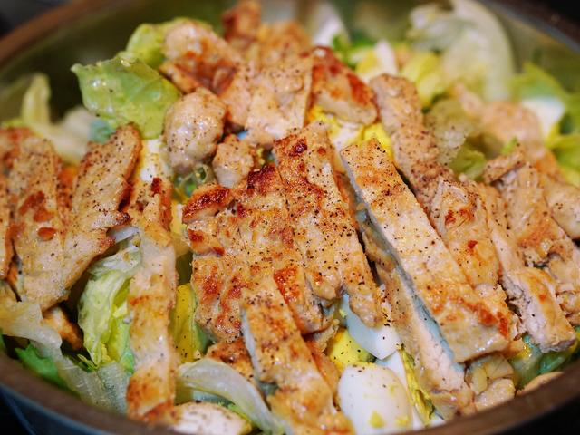

01 · 本课目标
为什么学煎鸡胸？
它是“判断肉熟没熟”的入门课：不能用铲子切开看，但能从弹性、时间和颜色里学会判断。
本课记住一句话：鸡胸表面金黄、按下去有弹性时先别出锅——关火盖盖焖 2 分钟，让中心用余温熟透。
02 · 用料
买这些就够了
鸡胸要买表面微湿、不发黏的；太厚的肉先片薄，这是不夹生的第一步。
还需要：一口带盖的平底锅（不粘锅最好）、夹子或锅铲、一个盘子。没有盖子时，可以拿一个大小合适的盘子倒扣在锅上。
03 · 跟着做
七步，煎出嫩鸡胸
总时间不长，但每一步都有“别急”的理由，请按顺序来。
第一段 · 准备与腌制（约 8 分钟）
-
STEP 处理 · 约 3 分钟
鸡胸片薄，吸干表面水分
如果鸡胸很厚，用刀平行于案板，把它横着片成两片约 1.5 厘米厚的肉排。用厨房纸吸干表面水分。
看到这样算对：两片肉厚度接近，表面没有明显水分。水分太多下锅会变成“煮”而不是“煎”。

-
STEP 腌制 · 约 5 分钟
抹盐和胡椒，静置 5 分钟
两面撒盐和黑胡椒，用指尖抹匀；喜欢底味可以再抹半勺生抽。静置 5 分钟，让盐渗进去。
看到这样算对：静置后肉表面微微湿润，没有明显盐粒堆积；如果抹完立刻下锅，咸味只停在表面。

第二段 · 下锅煎（约 8 分钟）
-
STEP 热锅 · 约 1 分钟
中火热锅，油面出现细纹
平底锅放中火上，倒入油并倾斜让油铺满锅底。等约 1 分钟，油面出现细微波纹、手放锅上方能感到热浪。
看到这样算对：油没有冒浓烟；滴一小滴水会“呲”地弹开。油温太高时关火等 20 秒。

-
STEP 第一面 · 3 分钟
鸡胸入锅，先别动它
把鸡胸平放进锅，保持中火，静置 3 分钟不要翻动。时间到了用锅铲轻轻推一下，能推动就翻面。
看到这样算对：贴着锅的一面呈金黄色，能整块推动；如果铲不动，说明还没煎够，再等 30 秒。

-
STEP 第二面 · 2 分钟
翻面再煎 2 分钟
翻面后中火再煎 2 分钟，看到边缘发白、肉开始变紧。此时先不要判断“熟没熟”，下一步才是关键。
看到这样算对：两面都金黄，肉最厚处用手指按压还有一点软；如果按下去像石头，说明已经过了。

-
STEP 焖熟 · 2 分钟
关火盖盖焖 2 分钟
关火，立刻盖上锅盖，用余温焖 2 分钟。这一步让中心熟透，同时锁住肉汁。
看到这样算对：开盖后表面微微泛出透明汁水；切最厚处没有粉红色，汁水是清澈的。

-
STEP 休息 · 2 分钟
盛出静置 2 分钟再切
把鸡胸放到盘子里，静置 2 分钟再切。刚出锅就切，肉汁会流到案板上，肉就干了。
看到这样算对：切开后能看到薄薄一层汁水在肉纹里；咬一口，中心不柴、不夹生。

04 · 翻车急救站
鸡胸翻车，大多因为“急”
外面焦了里面还没熟、煎完像柴火，都是火候问题，按下面补救。
外面焦了，里面还是生的
为什么：火太大，或肉太厚没片开。
现在怎么办：立刻转小火并盖上盖子，用蒸汽把中心焖熟 3–5 分钟；焦掉的部分可以切掉。
下次避免：鸡胸先片薄到 1.5 厘米，全程用中火而不是大火。
煎出来又干又柴
为什么：煎太久、火太大，或切太早让肉汁流走。
现在怎么办：顺着纹理斜着切成薄片，淋一点生抽或沙拉酱，当鸡丝拌进沙拉里依然好吃。
下次避免：中火每面控制在 3+2 分钟，关火焖 2 分钟，盛出静置 2 分钟再切。
一翻面就粘锅、破皮
为什么：锅没热透、油没铺开，或翻得太早。
现在怎么办：先用锅铲从边缘轻轻推，能推动再翻；已经粘住就关火等 30 秒，让肉自己松开一点。
下次避免：中火把油烧到有细纹再下肉，第一面煎够 3 分钟再碰它。
不知道熟没熟
为什么：只靠时间没有参照。
现在怎么办：拿刀在最厚处切一个小口看：没有粉红就是熟了；还有一点粉红就盖盖再焖 1 分钟。
下次避免：记住判断三件套：边缘发白、按下去有弹性、最厚处切开无粉红。
05 · 通关标准
怎么算“学会了”？
做到下面四条，说明你已经能“看懂”一块肉了。
-
1
两面金黄均匀 不是黑焦，也不是白乎乎的水煮色。
-
2
切开没有粉红色 中心熟透，但切面还看得到一点汁水。
-
3
咬起来不柴 能撕成条而不是掉渣，咽下去不干。
-
4
下次不用量时间也心里有数 看颜色、按弹性就知道要不要翻面、要不要出锅。